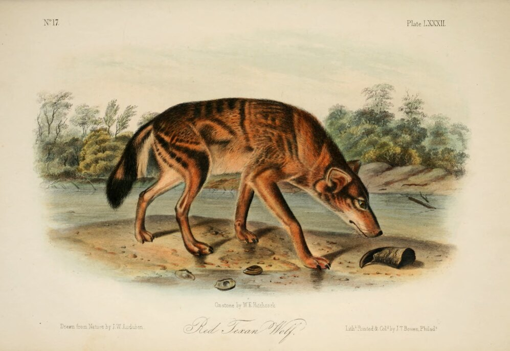

Red wolf
Canis rufus
A wolf of the Southeast, gone from Alabama since the 1920s and now wild in only one place.
Thought to be gone from Alabama. This mammal is on the federal list and once lived in the state, but it is not known here today.

The drawing could not be loaded. See the original.
What it looks like
A wolf between the coyote and the gray wolf in size. It is mostly brown and buff, with black along the back and reddish fur behind the ears and on the neck and legs.
Where it lives
It once used country of many kinds across the Southeast. The one wild population today lives in eastern North Carolina.
In Alabama
Red wolves once lived across Alabama. By 1921 they were reported nearly gone, holding on last in the rough hill country from Walker County northwest to Colbert County, and they vanished from the state in the early 1920s.
Why it is at risk
Gunshots and vehicle strikes, and interbreeding with coyotes, which grows worse as the wolves grow fewer. The red wolf was declared extinct in the wild in 1980, and a few dozen now live wild in North Carolina.
References
- FWS: Red Wolf Recovery Program fws.gov
- Outdoor Alabama: red wolf outdooralabama.com
General sources for this group:
- U.S. Fish & Wildlife Service: Species Point of Contact in Alabama fws.gov
- Code of Federal Regulations, 50 CFR Part 17: the Lists of Endangered and Threatened Wildlife and Plants ecfr.gov
- Encyclopedia of Alabama: Endangered and Threatened Animal Species of Alabama encyclopediaofalabama.org
- Outdoor Alabama, the site of the Alabama Department of Conservation and Natural Resources outdooralabama.com